While Super Mario World (SMW for short) is a pretty good game, it comes with a very big flaw that makes the game basically unplayable.
In this Guide, I will be showing you what the flaw is, and how to fix it.
The flaw that we are going to fix today is actually at the beginning of the game!
It is right here in the Title Screen.
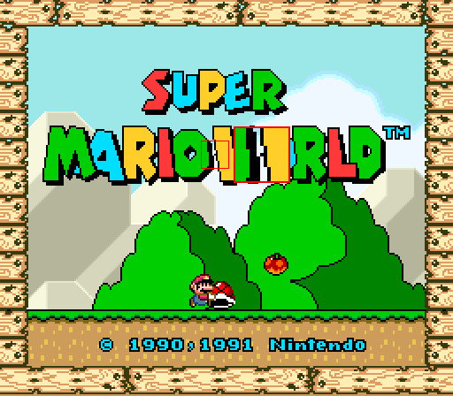
That's right! A RANDOM FUCKING PIXEL WHAT THE SHIT. >:(
This pixel is actually part of the Graphics, meaning we do not have to do any coding related things to fix this!
Now that we know the BIGGEST flaw in Super Mario wOrld, what can we do about it?
Graphics (from Greek γραφικός graphikos, "belonging to drawing") are visual images or designs on some surface,
such as a wall, canvas, screen, paper, or stone to inform, illustrate, or entertain. In contemporary usage,
it includes a pictorial representation of data, as in c manufacture, in typesetting and the graphic arts,
and in educational and recreational software. Images that are generated by a computer are called computer graphics.
Examples are photographs, drawings, line art, graphs, diagrams, typography, numbers, symbols, geometric designs,
maps, engineering drawings, or other images. Graphics often combine text, illustration, and color.
Graphic design may consist of the deliberate selection, creation, or arrangement of typography alone, as in a brochure,
flyer, poster, web site, or book without any other element. Clarity or effective communication may be the objective,
association with other cultural elements may be sought, or merely, the creation of a distinctive style.
Graphics can be functional or artistic. The latter can be a recorded version, such as a photograph,
or interpretation by a scientist to highlight essential features, or an artist, in which case the distinction with imaginary graphics may become blurred.
It can also be used for architecture.
Let's fix this issue using some Rom Hacking Tools!
Assuming you already own a LEGALLY OBTAINED copy of Super Mario World, this step shouldn't be an issue.
Tools that you will need:
Lunar MagicDownload both of these tools and put them in locations where they are easy to find.
1. Make a copy of your SMW rom in a seperate folder and rename it to something like "smw-fix.smc".
2. Open said copy with Lunar Magic
We are finally in the editor!
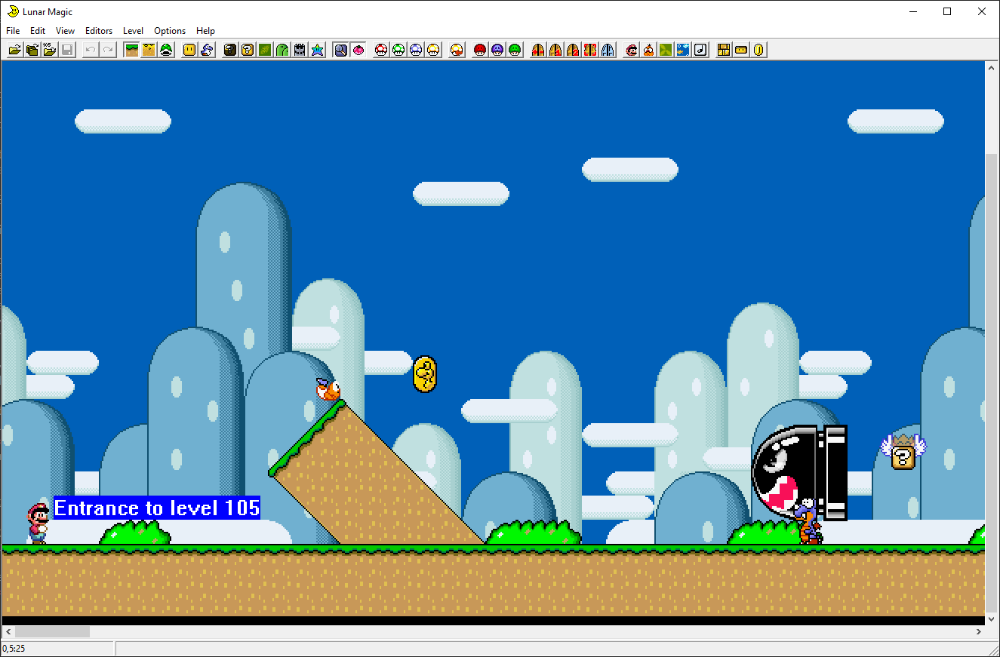
At the top of the program you have a list of Tools to use.
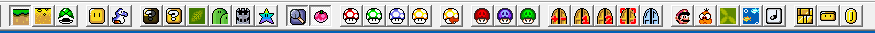
The ones we are looking for are these four Mushrooms.
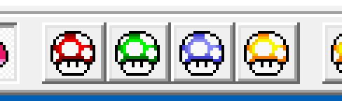
These let you extract Graphics and Reinsert them back into the game, exactly what we are looking for!
3. Click on the far left Mushroom (the Red one), this one extracts the Graphics!
4. Once you have done this, in the same folder as the rom, look for a folder called "Graphics".
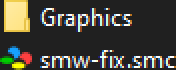
Opening this folder will show a bunch of files called GFX__.bin.
These BIN files contain every Graphic in the game and can be edited using YY-CHR, the Tool we downloaded earlier.
5. Open YY-CHR.
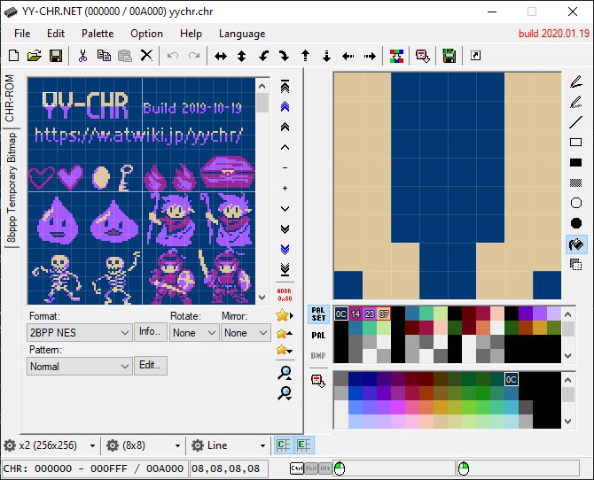
This is YY-CHR's UI. Pretty cool, right?
Let's load the Graphic file that contains the Title Screen Graphics!
6. Drag and Drop the file called GFX29.bin into YY-CHR.
Wait a minute... This doesn't seem right.
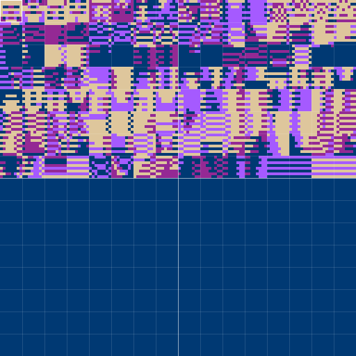
Luckily, we can fix this by changing the Format of the loaded Graphic.
7. Locate the "Format" option below the square of broken Graphics.
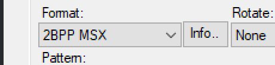
As shown in the image, this should be set to 2BPP MSX for you.
This is not the correct Format and we need to change it.
8. Click on the button and select the Format "2BPP GB".
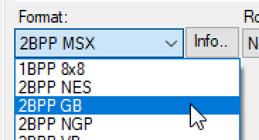
Much better.
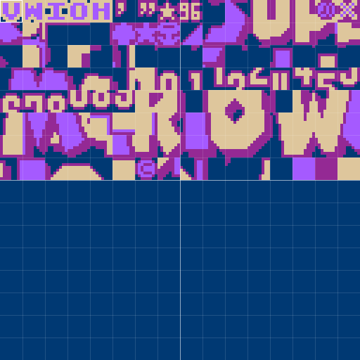
As we saw earlier, the terrifying pixel is right here, on the left side of the W.
Comparing the Graphics with the actual Title Screen finally reveals our issue, this Pixel right here.
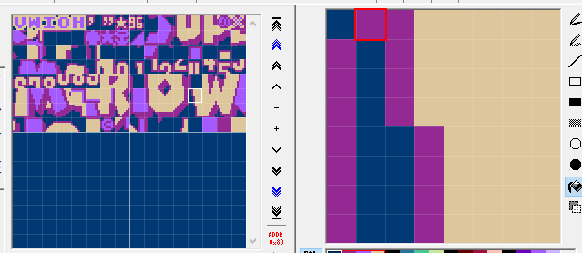
9. Make sure you have the Dark Blue color selected by right clicking on it in the Editor.
10. Finally, left click on that Pixel.
It's finally gone!
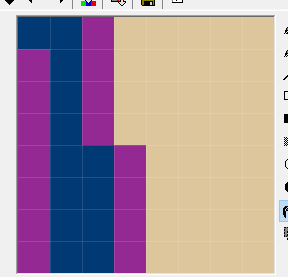
11. Save the file.
Should this appear make sure to press NO.
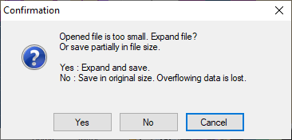
12. Go back to Lunar Magic.
Remember these Mushrooms from earlier?
13. This time, click on the second Mushroom (the Green one).
And finally, 14. Open the rom in an Emulator (NOT ZSNES BECAUSE THAT ONE SUCKS).
If you have done everything right, that stupid pixel is finally gone!
If you somehow did mess up, don't worry! At the bottom of this text is a Before and After because I thought it looked cool.
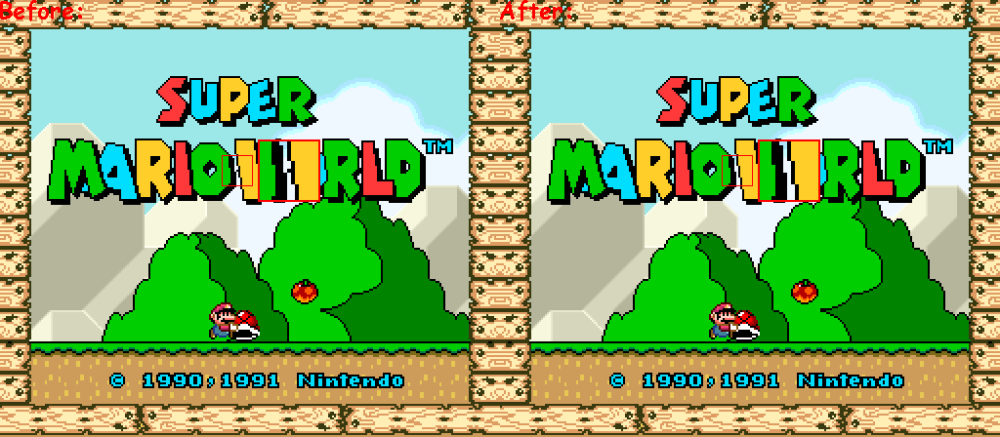
I hope you enjoyed this Guide on how to make SMW more playable!
Thanks for reading! Be sure to share this to other people with the same problem!